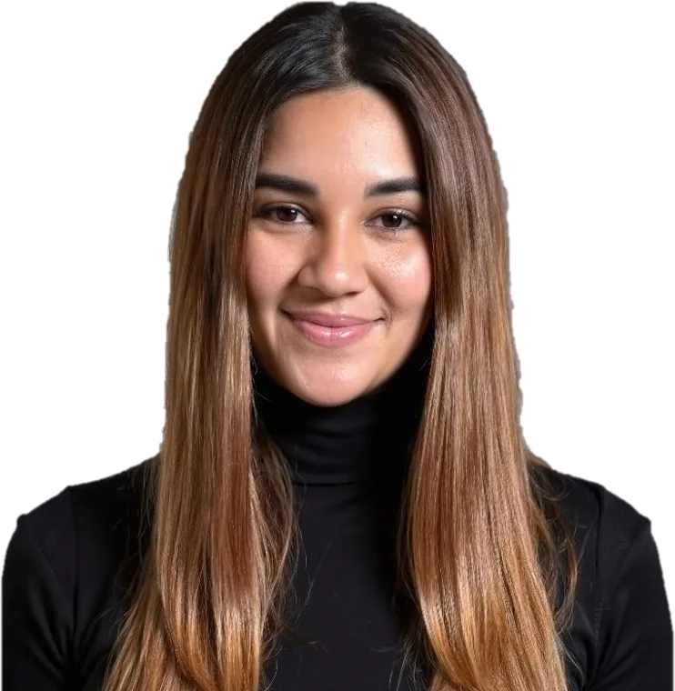

¿List@ para ponerte al día?
Outside-In.
Las nuevas tendencias en las organizaciones, en un solo lugar.
Actualizado el miércoles 21 de octubre · 17 estudios leídos · 10 estudios publicados · 1 insight
Creado, diseñado y automatizado por Desirée Solano


¿Te pasa que salen tantos estudios que es imposible leerlos todos?
A mí también.
Por eso creé Outside-In: un solo lugar donde mi sistema encuentra cada semana las nuevas tendencias en las organizaciones.
Y donde yo cruzo la data para contarte dónde coinciden, dónde se contradicen y qué significa para ti.
Estudios
Cada estudio que mi sistema encuentra, resumido con su data clave y el enlace al original.
Quiero ver qué dicen los estudios sobre en
Insights
Muchos estudios miran los mismos temas, pero no siempre llegan a las mismas conclusiones. Aquí los pongo a conversar.

Mi sistema ya está buscando el próximo cruce.
Mi mirada
Los datos cuentan una parte de la historia. Aquí te cuento lo que veo yo.
 Lo que veo yo.
Lo que veo yo.Cada columna parte de un insight.
Te cuento qué significa para quienes lideran: en primera persona, breve y con una pregunta para seguir la conversación en LinkedIn.
Juntando las piezas
Mi propio estudio de estudios: lo que dicen decenas de investigaciones sobre las tendencias en las organizaciones, con una mirada especial en Latinoamérica.
Sobre mí

¿Eres de las personas que no puede quedarse con una pregunta sin responder? Yo tampoco.
Necesito entender por qué pasan las cosas y armar el rompecabezas hasta que todo encaje. Esa curiosidad me ha acompañado durante más de 7 años en transformaciones de empresas, desde Accenture y APOYO Comunicación, con clientes Fortune 500.
Si te gusta conversar de cultura, comunicación, IA… o de perros, escríbeme. ☕
desireesolanochang27@gmail.com